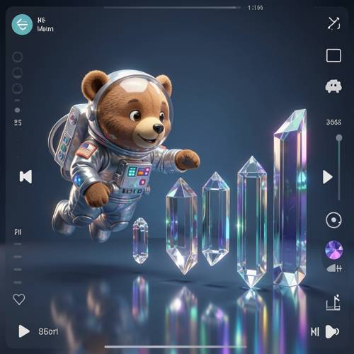
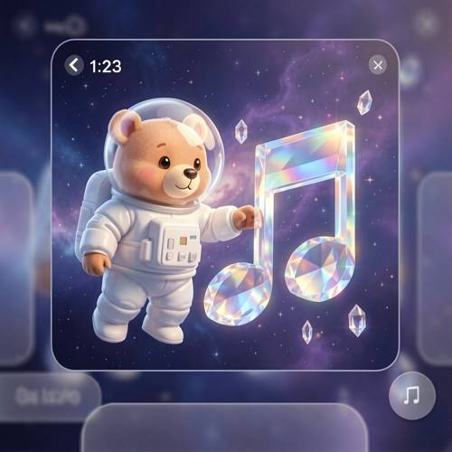
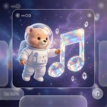
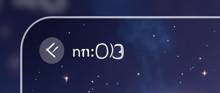
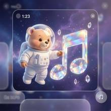
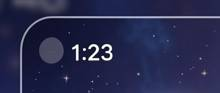
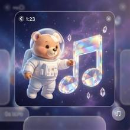
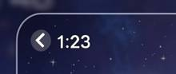

Compound — Please design a playback scene for a music App. A cartoon bear wearing
Please design a playback scene for a music App. A cartoon bear wearing a spacesuit floats to touch the musical symbols made of crystals. The overall style is a glass imitation.

Direct — one call, no iteration

Continuum — Qwen3.8-27B + FLUX.2-klein-9B
Judge — Direct
FAILCompound - Imagination — The image features a cartoon bear wearing a spacesuit and floating. It is reaching to touch objects made of crystal. However, these objects are not musical symbols (like notes or clefs); they are vertical, geometric crystal bars of varying heights, resembling a sound equalizer.
FAILAttribute - Material — The objects in front of the bear are depicted as faceted, transparent crystals with light refracting through them. However, they are not shaped like musical symbols but are instead vertical bars.
PASSStyle — The overall image has a style that can be described as glass imitation or glassmorphism. This is visible in the transparent crystal elements, the glossy and highly reflective floor, the bear's glass helmet, and the translucent user interface elements.
PASSAction - Full-body (Character/Anthropomorphic) — The image shows the full body of a cartoon bear. The bear is depicted in mid-air with its body oriented horizontally and its legs bent, giving the impression that it is floating. Its right arm is extended forward in the action of reaching to touch the crystals.
Judge — Continuum
PASSCompound - Imagination — The image depicts a scene that is impossible in real life, featuring a cartoon bear wearing a white spacesuit with a transparent helmet. The bear is shown floating in a space-like environment next to a large musical note made of a crystalline material.
PASSAttribute - Material — The large musical symbol, a beamed eighth note, and several smaller surrounding shapes are rendered with facets that refract light, giving them the appearance of crystal or diamond.
PASSStyle — The image is presented within a rounded rectangle, mimicking a mobile app interface. The UI elements surrounding the main image, such as the playback bar and buttons, are translucent and blurred, consistent with a 'glass imitation' or glassmorphism design style.
PASSAction - Full-body (Character/Anthropomorphic) — The full body of the cartoon bear is visible. It is depicted in a weightless pose, suggesting it is floating. Its left arm is extended, and its hand is touching the stem of the large musical note.
What the agent did
Thinking
The user is asking for a scene image for a music app's playback: a cartoon bear wearing a spacesuit floating in space, reaching out to touch a crystal musical note. Overall style: glassmorphism (glass imitation). Let me think about composition: - Music app playback scene (like a "now playing" screen aesthetic) - A cartoon-style bear wearing a spacesuit (cute, rounded, glassy) - Floating in space (weightless) - Reaching out to touch a crystal musical note - Glassmorphism style: translucent glass surfaces, frosted glass, refraction, blur, light streaks I should generate with flux2-klein (per benchmark policy), then inspect, edit, mark best. Let me write a detailed visual prompt: "Glassmorphism illustration, a cute cartoon bear in a white translucent spacesuit with a glass bubble helmet, floating weightlessly in deep space, extending one paw to gently touch a glowing crystal musical note. The note is made of faceted transparent crystal glass, refracting rainbow light. Glassmorphism UI style: frosted glass panels, soft blur, translucent gradient background of deep blue and purple space with stars, subtle glass cards, soft lighting, 3D render style, clean composition, centered subject, premium music app now-playing screen aesthetic, high detail." Note: glass imitation = glassmorphism (glass imitation) style. The user probably means "glassmorphism." Let's generate. Size: probably something wide like 1024x1024 or a landscape format suitable for a music player card. For a music app playback scene, a landscape format like 1536x1024 or 1024x1024 might be nice. Let's go landscape 1344x1024… Actually, the tool takes width/height parameters. Let's go 1280x1024 for the app scene. Hmm, but the image size is fixed for comparison — the harness controls the size. Let me pick something reasonable: 1536x1024 (3:2) landscape, or square 1024x1024. Music app playback scenes are often landscape. Let's go 1408x1024. No, let's keep it simple: width 1536, height 1024. Let's generate.
Step 1 — `generate_image`
{
"model": "flux2-klein",
"prompt": "Glassmorphism illustration for a music app now-playing screen: an adorable cartoon bear wearing a puffy translucent white spacesuit with a clear glass bubble helmet, floating weightlessly in deep space, gently reaching one paw to touch a large musical note (eighth note) carved from faceted transparent crystal glass. The crystal note glows with soft rainbow refractions and tiny sparkles, small crystal notes floating nearby. Background: deep blue-violet cosmic space with soft stars and nebula, frosted translucent glass panels and rounded glass UI cards with subtle blur in the foreground corners. Glass imitation style: translucent materials, frosted glass, refraction, soft light glow, clean premium 3D render, smooth rounded shapes, cozy cute mood, centered composition, high detail.",
"width": 1536,
"height": 1024
}
Result img_0

Thinking
This result is pretty good! Let me evaluate it against the prompt: 1. ✅ Cartoon-style bear in a spacesuit (puffy white spacesuit, glass bubble helmet) — cute, floating in zero gravity. 2. ✅ Reaching a paw out to touch crystal musical notes — the bear's paw is near a large crystal eighth note. 3. ✅ Crystal notes — faceted transparent crystal with rainbow refraction, plus a small floating crystal. 4. ✅ Glassmorphism style — frosted glass UI panels, translucent glass cards, blurred background, glass UI elements (back button, X, music note button). 5. ✅ Music app playback scene — looks like a now-playing screen with UI chrome. Issues I noticed: - Top-left, there's a garbled text "nn:0)3" near the back button — looks like broken timer text. This is a flaw. Glass imitation style usually has clean text, but this garbled text looks like a defect. I should try to clean it up. - The bear is floating nicely, and the paw is touching/near the note. Actually, the paw is near the stem of the note — good. - Composition is good: a card with rounded corners on a blurred background, typical glassmorphism app UI. The garbled text "nn:0)3" is the main flaw. Let me try fixing it with an edit: either remove the garbled text or turn it into a clean timer. In a music app playback scene, a time display like "1:23" would be natural. Let me try editing to replace the garbled text with a clean time display. Let me try using edit_image: "Replace the garbled text 'nn:0)3' in the top-left with a clean, legible white time display '1:23'" — but I should describe only the changes. Let me phrase it like this: "Fix the small garbled text in the top-left area of the glass panel and render it as a clean, crisp white playback time display '1:23'." Hmm, text rendering with flux2-klein might be dicey, but let me give it a try. As an alternative, I could just remove the text entirely and make the area clean glass with only the back chevron. That's safer — no text = no chance of spelling mistakes. The prompt doesn't require text. A clean playback scene without a timer is fine. Let me do this: "Remove the garbled text next to the back button in the top-left of the glass panel, keep only the back chevron icon, and leave that area as clean frosted glass." Actually, wait — should I first inspect the top-left to confirm the garbling? Let me zoom in to check.
Model
The first generation is pretty close — a cute bear astronaut touching a crystal note on a glass card. Before deciding on an edit, let's zoom in on that garbled text area in the upper left to check.
Step 2 — `inspect_region`
{
"image": "img_0",
"roi": [
70,
60,
260,
120
]
}
Result img_1
Thinking
(Thinking note: The crop was off — the top-left corner of the card was cut off. The image is 1536x1024, but the displayed thumbnail is roughly 768x512. The displayed image seems to be 768x512 (half scale). Therefore, the coordinates in the displayed thumbnail need to be doubled to get the source pixels. The garbled text "nn:0)3" is roughly at x 100-200, y 55-85 in the displayed thumbnail → in source pixels, x 200-400, y 110-170. The back button is roughly at (75, 68) on display → (150, 136) in the source. Let me try cropping the region [80, 60, 420, 220] in source pixels.)
Model
The crop was off — the thumbnail I saw is half-scale, so I need to double the coordinates. Let me re-inspect.
Step 3 — `inspect_region`
{
"image": "img_0",
"roi": [
80,
60,
460,
220
]
}
Result img_2

Thinking
Confirmed: in the upper left there's a back chevron button, and next to it a garbled "nm:O)3" (probably meant to be a playback timer like "1:23"). This is the only real defect. The rest of the scene is strong: bear in a spacesuit, crystal musical notes, glassmorphism UI. Edit plan: replace the garbled text with a clean playback time. Options: 1. "Replace the garbled text next to the back button with a clean, readable white timer display '1:23'" — risk: the model might garble it again. 2. Remove the text entirely: "Remove the garbled characters next to the back chevron and leave only clean frosted glass" — safe, and a playback scene doesn't strictly need a timer. I'll try option 1 first, with a specific string. If the text comes out garbled again, I'll fall back to removal. Actually, a cleaner, lower-risk approach for a music app scene: many now-playing glass cards have a time display. "1:23" is a short, simple string. Flux2-klein can handle short strings reasonably well. Let's try it. Prompt: "Replace the garbled white text 'nm:O)3' in the upper left next to the back chevron button with a clean, crisp, legible white playback time display '1:23' in a modern sans-serif font. Don't change anything else." Keep it as a delta. Let's execute.
Model
Confirmed: next to the back chevron, there's a garbled timer string "nm:O)3" — this is the only actual defect in an otherwise strong composition. I'll replace it with a clean, legible playback time display.
Step 4 — `edit_image`
{
"image": "img_0",
"model": "flux2-klein",
"prompt": "Replace the garbled white text \"nm:O)3\" in the top-left corner next to the back chevron button with a clean, crisp, legible white playback time display \"1:23\" in a modern rounded sans-serif font. Change nothing else in the image."
}
Result img_3

Thinking
The edit succeeded — the garbled text has been replaced with a clean "1:23". However, I noticed that the back chevron button has disappeared — in its place there's now a gray circular dot where the chevron used to be. Let me zoom into the top-left and check. Also, the overall image appears to have shifted slightly (now it's 768x768? The display is 768x768 — actually the output might be square 768x768... hmm, the displayed image looks squarer). Wait, the previous image was displayed as 768x512 (3:2). This one is displayed as 768x768? Hard to tell. Actually, in the thumbnail it looks like the same aspect ratio is preserved. Let me zoom into the top-left to check the chevron and the text.
Model
The time display is now clean "1:23", but it looks like the back chevron has been replaced by a plain gray dot. Let me zoom in to verify.
Step 5 — `inspect_region`
{
"image": "img_3",
"roi": [
80,
60,
460,
220
]
}
Result img_4

Thinking
Confirmed: the back chevron button has become a plain gray circle (no chevron icon), with "1:23" next to it. In the original image there was a nice back chevron "<" inside a glass circle. A minor regression. Options: 1. Edit again: "Restore the white left-pointing chevron arrow icon inside the gray circle in the upper left." 2. Accept it as-is — it's a small detail, and the gray dot could pass as a decorative element. However, compared to the original, the chevron was a nice playback-scene cue (back to the library). Worth one quick fix attempt. Let me try an edit to restore the chevron.
Model
The time is clean now, but the chevron icon got flattened into a plain gray dot. One quick fix to restore it.
Step 6 — `edit_image`
{
"image": "img_3",
"model": "flux2-klein",
"prompt": "Inside the small gray circle in the top-left corner of the glass panel (left of the \"1:23\" text), draw a crisp white left-pointing chevron arrow icon, like a back button. Change nothing else in the image."
}
Result img_5

Thinking
The chevron has been restored, and the "1:23" is also clean. To confirm that the chevron and the overall text are correct, I'll do a final check on the upper-left corner.
Step 7 — `inspect_region`
{
"image": "img_5",
"roi": [
80,
60,
460,
220
]
}
Result img_6

Thinking
The top-left is now perfect: glass circle with white back chevron + clean "1:23" playback time. Final evaluation against the prompt: 1. ✅ Music app playback scene — glass card on a blurred glassmorphic background, back button, X close, music note button, timer. 2. ✅ Cartoon bear in a spacesuit — cute brown bear, white puffy spacesuit, transparent glass bubble helmet, backpack. 3. ✅ Floating — weightless pose, feet dangling, in space. 4. ✅ Touching a crystal musical note — paw extended, touching the stem of a large crystal eighth note. 5. ✅ Crystal note — faceted transparent crystal with rainbow refraction, plus small floating crystal shards/notes. 6. ✅ Glass imitation / glassmorphism style — frosted glass panels, translucent rounded-corner UI cards, blur, refraction, soft glow. All elements are present and correct. The image is good — stopping here. Marking img_5 as the best.
Model
The top-left corner is now perfect: a glass back button with a clean white chevron, and a legible "1:23" playback timer. The complete scene satisfies every requirement of the prompt: - **Music app playback scene**: A frosted-glass card floating on top of a blurred glass UI (back button, close button, music tab button, playback time) — a typical now-playing screen - **Cartoon bear in a spacesuit**: A cute, chubby bear in a puffy white suit, transparent glass bubble helmet, floating weightlessly - **Touching a crystal musical note**: Its paw is reaching out to touch a large faceted crystal eighth note, refracting rainbow light, with smaller crystal notes sparkling around it - **Glass imitation / glassmorphism style**: Frosted translucent panels, rounded-corner glass cards, soft blur, refraction, and glow throughout
Step 8 — `mark_best`
{
"image": "img_5",
"reason": "All prompt elements present and correct: glassmorphism music-app playback card, cartoon bear astronaut floating and touching a faceted crystal musical note, clean back chevron and legible \"1:23\" timer after two targeted fixes."
}
Thinking
The mark has been set to img_5, which is the latest and best image. Done. I'll give a brief final summary.
Model
Done! The final playback scene is marked as the best result. It's a glassmorphism music-app "now playing" screen: a cute cartoon bear astronaut floats weightlessly inside a frosted glass card, gently touching a large faceted crystal musical note that refracts rainbow light, with small crystal notes sparkling around it — all wrapped in the translucent glass-imitation style with soft blur, rounded glass UI controls, a back button, and a clean "1:23" playback timer.